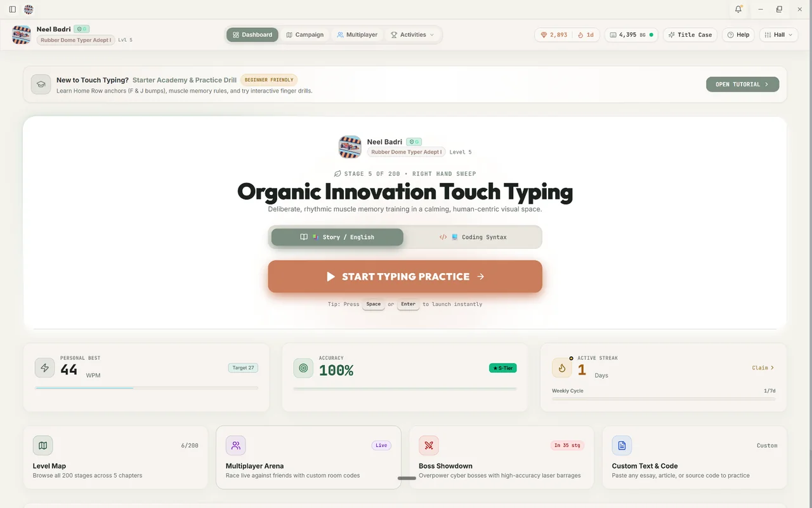

★ Primary Flagship

01 — Founding Project
Advanced Typing Instructor 1.4
Master touch typing and coding syntax in Python, C++, and JavaScript. Includes 200 progressive levels, real-time error heatmaps, authentic mechanical switch audio clicks, and competitive multiplayer races.
Launch Flagship